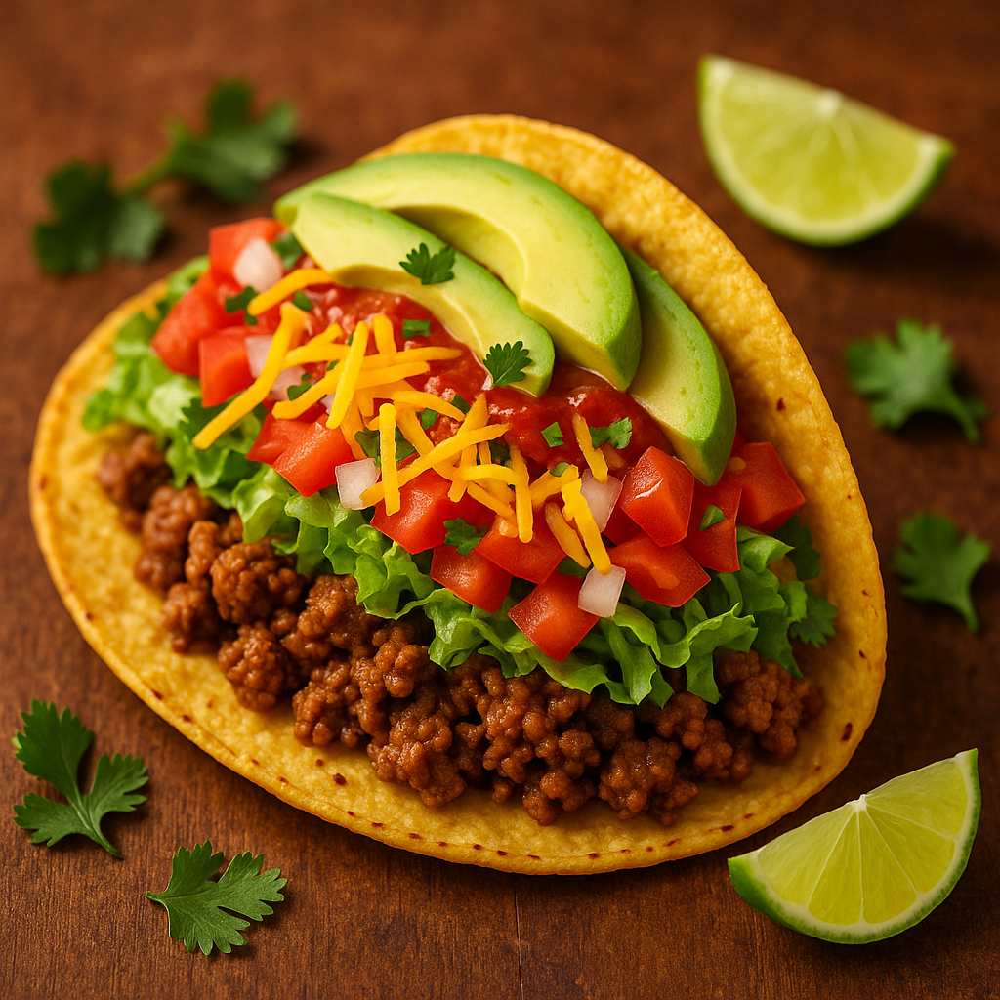

Home
Tacos Recipe

Description
Tacos are tasty
Here's a simple, delicious taco recipe you can make at home — adaptable for beef, chicken, or vegetarian options.
Ingredients
- 1 lb ground beef (or chicken, or beans & veggies)
- 1 tsp chili powder
- 1 tsp cumin
- 1/2 tsp smoked paprika
- 1/2 tsp garlic powder
- 1/2 tsp onion powder
- Salt & pepper to taste
- 8 small tortillas (corn or flour)
- Shredded lettuce
- Chopped tomatoes
- Diced onions
- Shredded cheese
- Sour cream or Greek yogurt
- Avocado slices or guacamole
- Salsa or hot sauce
- Fresh cilantro
- Lime wedges
Steps
- Prepare your toppings: chop veggies, shred cheese, and set aside.
- Cook the filling:
- For beef: Brown ground beef in a pan and drain excess fat.
- For chicken: Dice or shred and cook until done.
- For vegetarian: Sauté bell pepper, then add black beans and corn.
- Add taco seasoning and a few tablespoons of water. Stir and simmer for 3–5 minutes.
- Warm tortillas in a skillet or microwave with a damp paper towel.
- Assemble the tacos: add filling, then toppings as desired.
- Garnish with lime juice and fresh cilantro before serving.